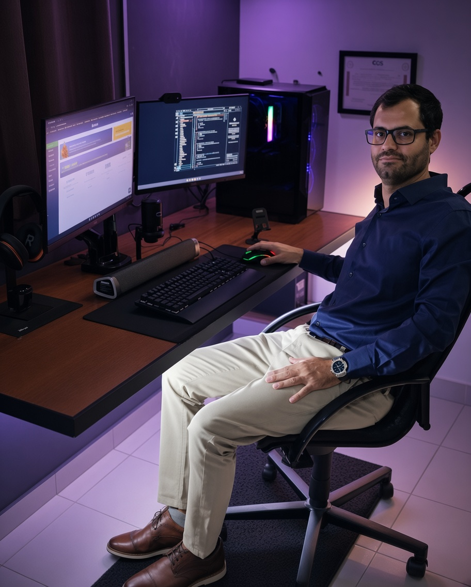

Olá, eu sou
Analista de Sistemas | TI | Suporte e Infraestrutura
Transformando tecnologia em soluções práticas e confiáveis. Uma trajetória de suporte, gestão de TI e aprendizado contínuo.

Sou Analista de Sistemas, com formação em Análise e Desenvolvimento de Sistemas e experiência sólida em suporte, infraestrutura e gestão de TI.
Ao longo da carreira, atuei em ambientes corporativos, no setor público e em provedor de internet, sempre com foco em resolver problemas, manter sistemas estáveis e apoiar pessoas e equipes no uso da tecnologia.
Aprendo constantemente, adapto-me rapidamente.
Foco na solução, não no problema.
Construo pontes, não barreiras.
Uma linha do tempo interativa da minha carreira
Suporte em hardware e software de clientes.
Suporte em toda a rede relacionada ao setor público do município, auxílio aos funcionários e administração do departamento de TI.
Suporte a clientes e novas ativações de internet fibra e wireless. Manutenção em toda a estrutura do provedor.
Crescimento com mentalidade ágil
Busco ambientes que valorizam entrega contínua de valor, feedback rápido e melhoria constante — os mesmos princípios das metodologias ágeis que aplico no dia a dia.
Meu objetivo é crescer como Analista de Sistemas em times ágeis, contribuindo com tecnologia, processos e cultura de melhoria contínua — sempre com foco em soluções reais.
Minha história contada em vídeo
Estou aberto a novas oportunidades e conexões